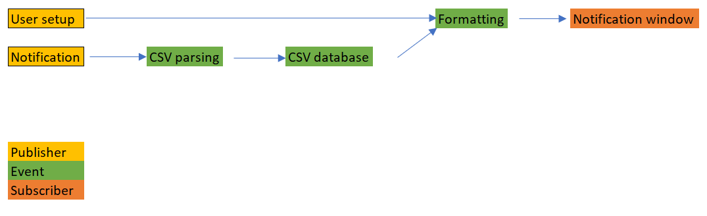

Design
Architecture design:

Above is the Publish/Subscribe architecture design. One process is the user setting up the notification window for the specific platforms they want to highlight.
A seperate processs is reading in the notifications, which come from the CSV file and then are written to the notification window and buttons.
Overview of project
- Create a central notification window for all incoming notifications to be shown.
- Sits on the left side of the users’ screen by default and has 5 windows for 4 specific notification brands (canvas, discord, github, outlook, etc) and one “other” section.
- Will show the most recent notification (first~10 chars) and when clicked will expand to show all unseen notifications (~150 chars).
CSV file
- Making stock notifications
- eventually, for further testing, add full list of notifications
- G-mail, Github, Microsoft Exchange, Discord, Reddit, Instagram, Facebook, YouTube, Lyft, Uber, Google Drive, Steam, GroupMe
- Reading in CSV file
Notification window
- Scroll bar
- Formatting buttons
- Sizing, change on click
- Logos
- Color
- Opacity
- Counter
- Timestamp
Buttons
- Read in notifications, have "canvas"-es go with canvas, "discord"-es go with discord
- Click to expand message, click again to resize back to small
- Only show most recent notification (stack data object?), click to see all the notifications
Future work
Multi threading
- Need more research
- "event dispatch" thread?
- synchronized
- Would allow for reading in notifications without affecting buttons
Menu for user setup
- Dropdown menus with platform options
- Reset setup whenever user wants